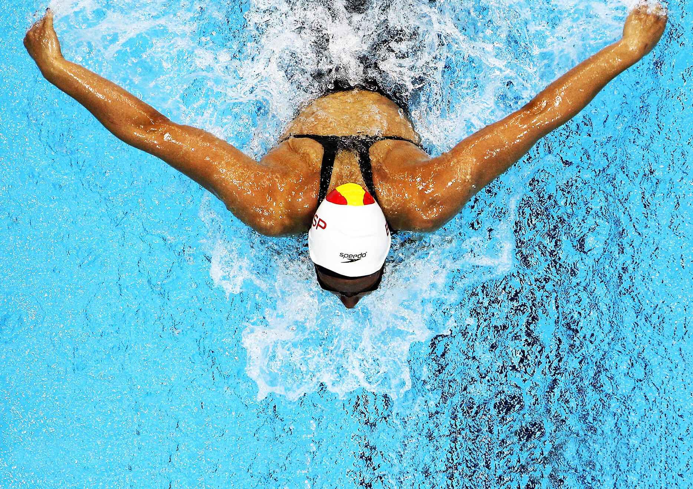

La natación es una de las disciplinas tradicionales de los Juegos Olímpicos modernos, realizada desde la edición inaugural en Atenas 1896. Originalmente, las pruebas de natación se realizaban en el mar o un lago artificial. En 1908 las pruebas pasaron a realizarse en piscina. En 1924 se incorporaron los carriles, así como la longitud olímpica de 50 metros.
Reglas
La piscina de competición, también denominada "olímpica" tiene 50 metros de longitud y 25 de ancho, siguiendo el estándar de la FINA. La superficie se distribuye en ocho calles o carriles de 2,5 metros, más dos de tamaño más reducido -0,2 metros- en los extremos, con el fin de reducir el oleaje.
Además del juez árbitro (de negro en la ilustración), hay 16 inspectores de virajes (azul oscuro), que tienen dos jefes de inspectores (naranja), dos jueces de salida (amarillo), 4 jueces de estilo (gris), 2 anotadores (verde) y 2 oficiales mayores (rojo).